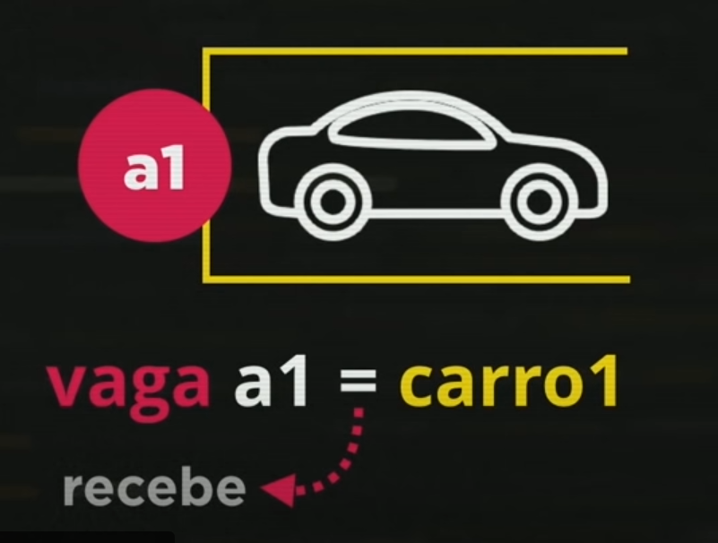
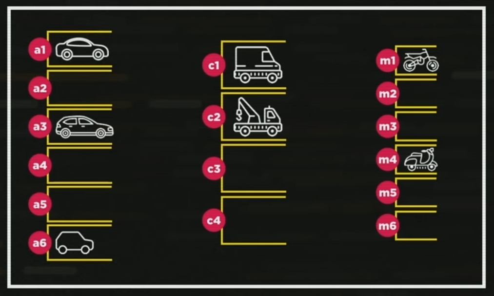
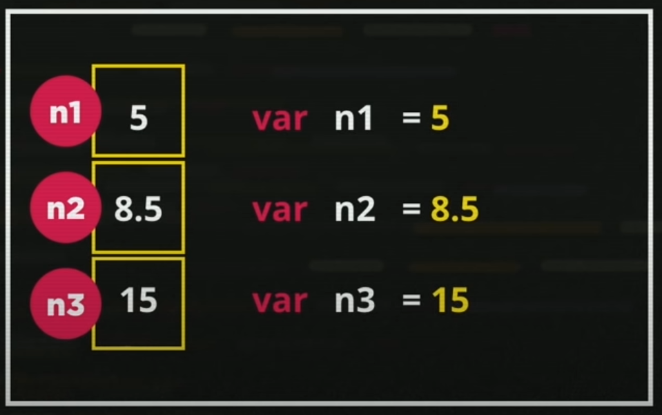
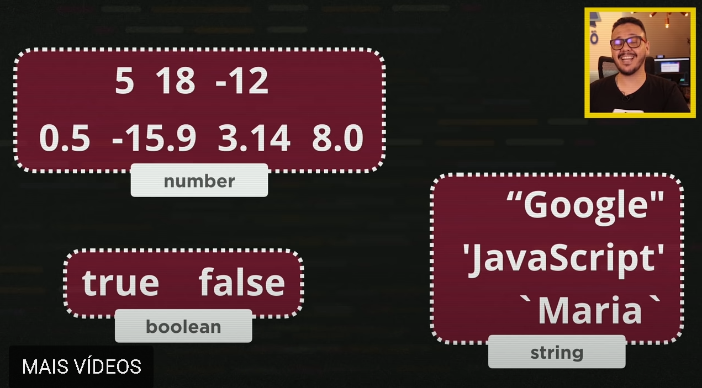

Javascript Aula 05 - Variáveis e Tipos Primitivos 
Nesta aula aprendi que posso fazer comentário em uma linha usando //.
E para fazer um comentário em mais de uma linha de código utilize /* */ ex:
/* ...mais de uma
linha de
código... */
Vendo o exemplo do estacionamento, aprendi que o sinal de = em Javascript chama-se recebe.
Vimos que a vaga demarcada como vaga A1 estava com carro1 mas pode receber carro2 desde que o carro1 saia da vaga, e se eu ordenar que a vaga não receba mais nenhum carro, em Javascript usa-se null.
Sendo assim as vagas do estacionamento citado no exemplo do Guanabara, são chamadas de variaveis, identificamos com var.
Assim como acontecem na memória do nosso computador, podendo receber dados em respectivos espaços, chamados Variáveis.
Aprendi que dentro de uma string que se encontra dentro das Variáveis como visto no exemplo do Guanabara, podemos utilizar três tipos de aspas, Ex: Aspas dupla '', Aspas simples ' conhecido como apóstrofo, e a cráse `. Exite uma diferença entre elas que iremos aprender mais a frente desse curso.
Ex:
var S1 = "Javascript"
var S2 = 'curso em vídeo'
var S3 = `Guanabara`
Vimos acima um exemplo de variável de diferente tamanho, nesse caso incluindo palavras.
Identificadores
O nome de cada variável chamamos de Identificador.br
Esse identificador segue algumas regras:
- Podem começar com LETRA, $ ou _
- Não podem começar com números.
- Pode usar letras com números.
- Pode usar acentos e símbolos.
- Não podem conter espaços.
- Não podem ser palavras reservadas.
Tipos Primitivos
Data Types
Mas saiba que no JAVASCRIPTexistem muitos outros Tipos Primitivos.
Ex:
O number tem dois valores internos que são muito importantes, o Infinity e o NaN.
Também temos os Tipos null, undefined, object que carrega um valor que é o Array. E também function é um tipo primitivo na linguagem JavaScript.
E para eu saber esses tipos todos para eu trabalhar com eles dentro do NodeJS eu posso utilizar o comando typeof, que é o tipo de...